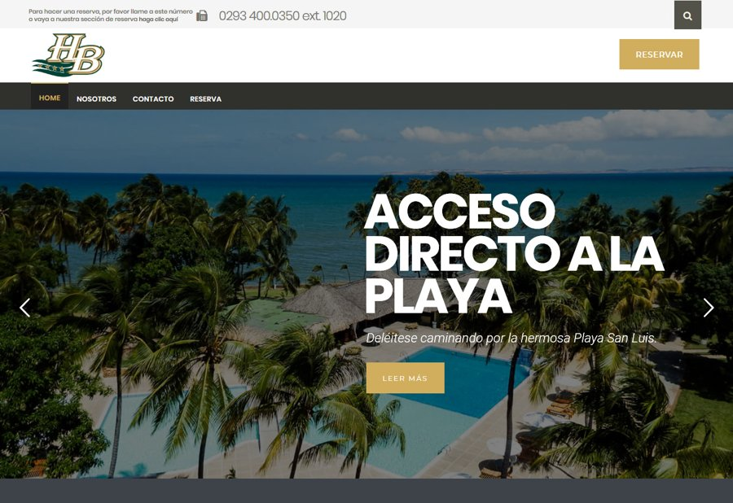
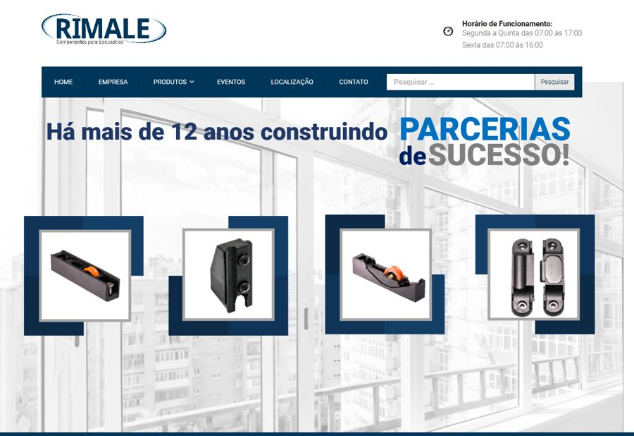
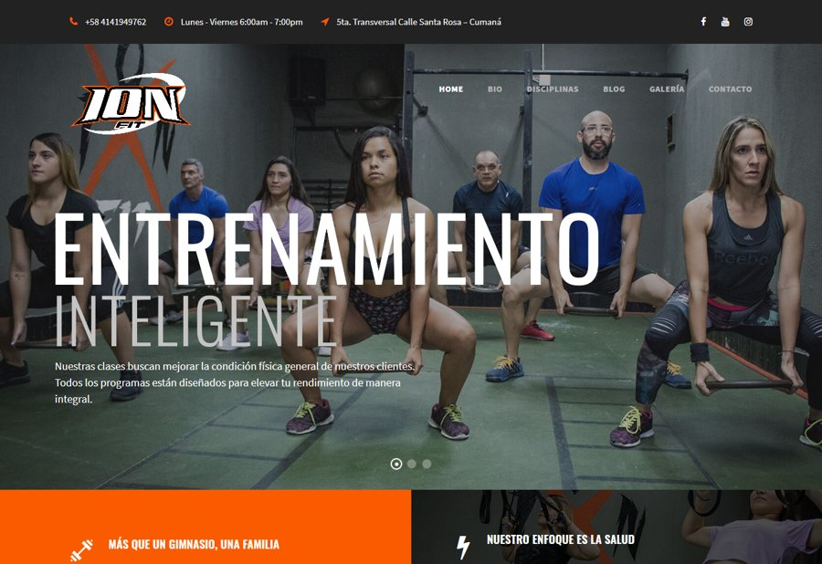
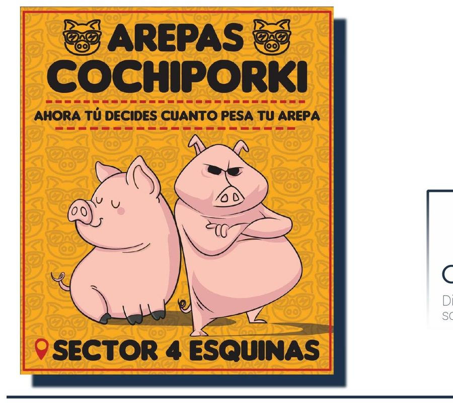
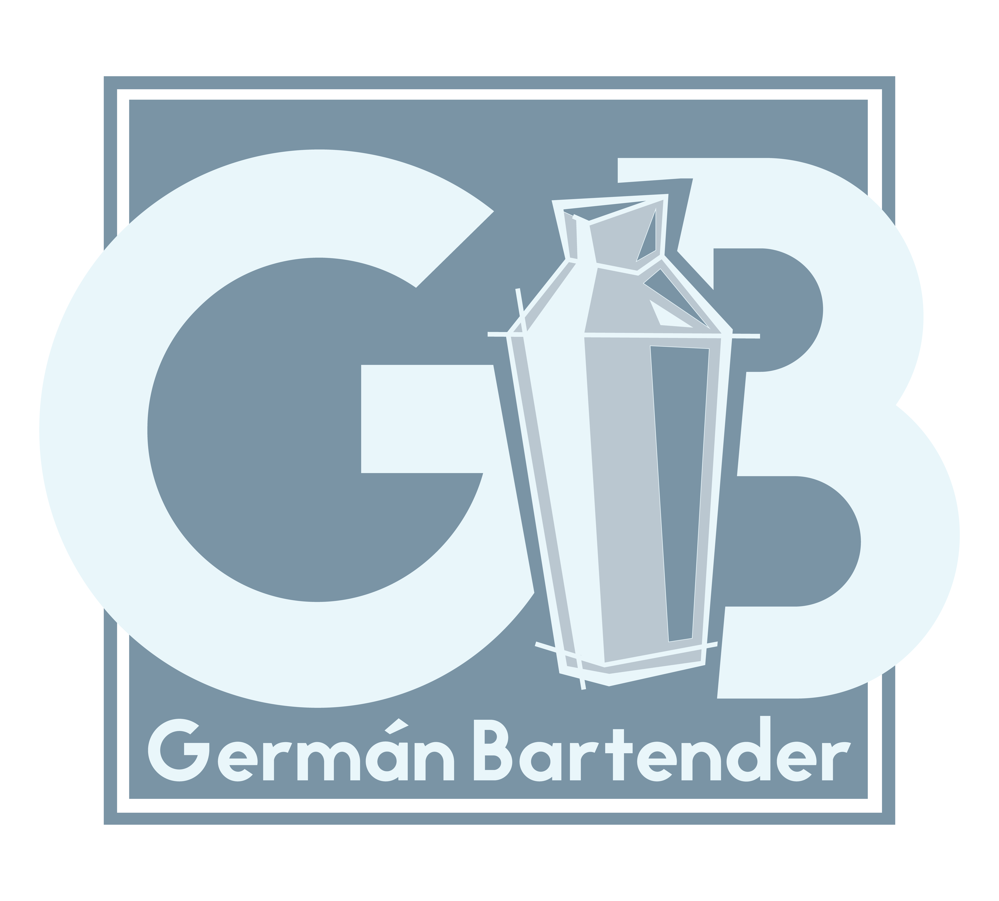
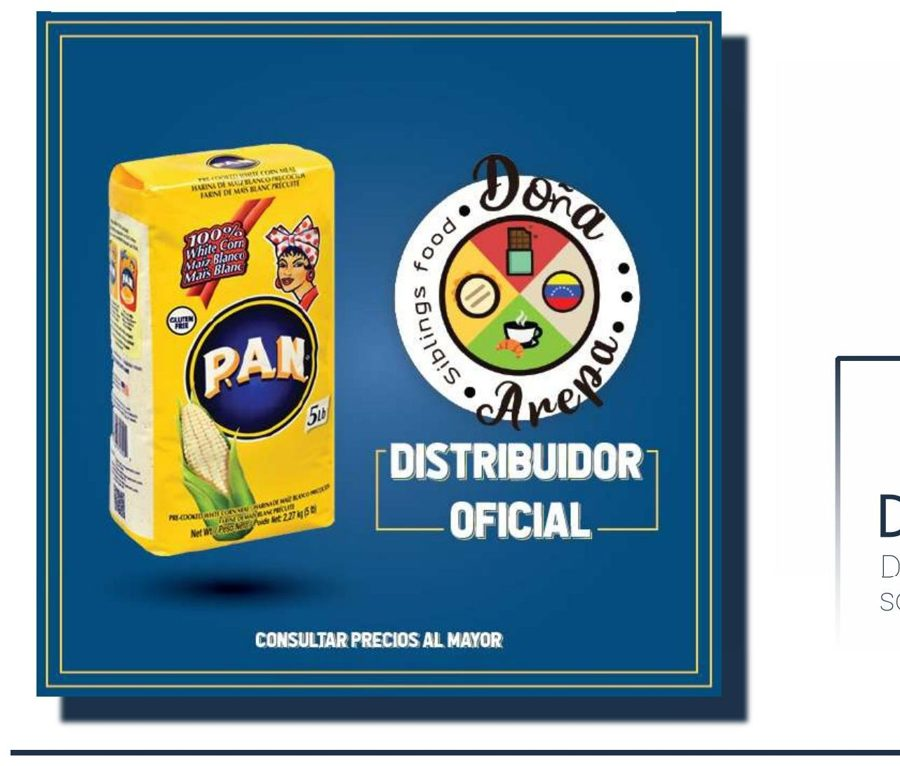
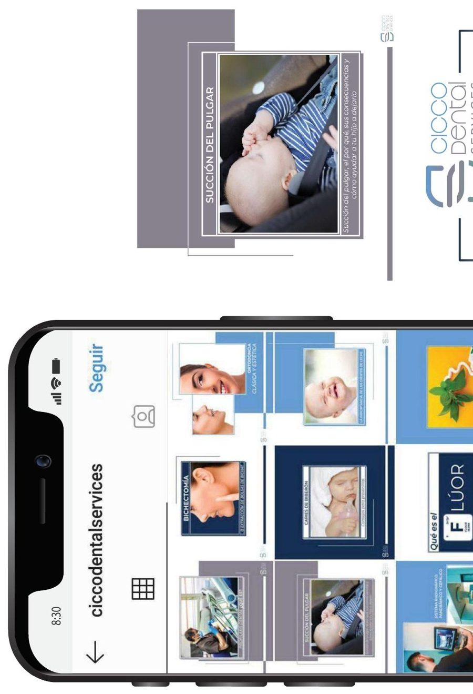

Proyectos

Hotel Los Bordones
Sitio web corporativo para el hotel, con secciones de habitaciones, servicios e instalaciones frente a la playa.

Rimale
Tienda online para Rimale, fabricante brasileña de componentes para esquadrías, con catálogo de productos.

Ion Fit
Web para un centro de acondicionamiento físico: planes, instructores y disciplinas del gimnasio.

Ferrecumaná
Diseño de logo e identidad para redes sociales de esta ferretería con tienda online.

Arepas Cochiporki
Logo y piezas para redes sociales de esta arepera, con un estilo ilustrado y desenfadado.

Germán Bartender
Diseño de logo personal para un bartender profesional, combinando iniciales y coctelera.

Doña Arepa
Piezas para redes sociales de este emprendimiento de comida venezolana en Argentina.

Cicco Dental Service
Serie de publicaciones educativas para redes sociales de una clínica odontológica.